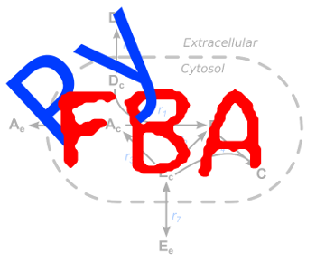

PyFBA 0.6 documentation

←
Flux Balance Analaysis
PyFBA
PyFBA Documentation
Previous topic
Flux Balance Analaysis
Show page source
Quick search
Enter search terms or a module, class or function name.
Parsing modules
¶
←
Flux Balance Analaysis
PyFBA
PyFBA Documentation